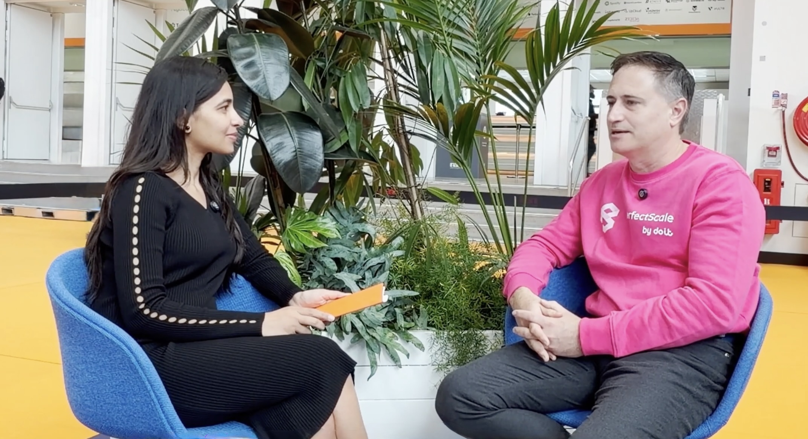

Hey, I’m Monika Rajput
Engineer, builder, storyteller, and advocate working at the intersection of AI, data, and developer communities.
Funny thing—I never planned to become an engineer, yet here I am with 6+ years in tech.
The Unexpected Start
I started in 2019 with a lot of uncertainty. Engineering wasn't the original plan, but once I began, I decided to move forward with full effort.
I learned by doing—every line of code and every failed build was a lesson. Gradually, I built confidence through action rather than theory.

Learning to Build
I spent years as a Data Scientist, diving into NLP and Computer Vision. But I realized that building a model wasn't enough. I wanted to ship products.
I learned the end-to-end journey—from consulting on strategy to writing the frontend code needed to get a tool into a user's hands. I became someone who learns whatever is needed to build.

The Reset
In 2023, the recession hit, and I lost my job. Suddenly, I had no title and no professional identity. It was a difficult reset.
But that void became a canvas. I started sharing my journey publicly, turning the silence into a story. This moment taught me that my value isn't tied to a company, but to my ability to create.

Community & Public Journey
That transition led me to the stage. I’ve judged hackathons, mentored at 40+ events, and learned the art of technical storytelling.
Most importantly, I’ve worked to inspire builders from tier-3 backgrounds to see that their path is possible.

The Monika Rajput Show
The Monika Rajput Show (TMS) was born out of pure curiosity. It's a space for deep conversations with the builders of Cloud, Data, AI, and Open Source.
It’s about learning in public and connecting the dots between people and progress. Through TMS, I've interviewed founders and engineers who are shaping the next decade of technology.
The Monika Rajput Show
Available on Spotify & YouTube.

What Excites Me Now
I want to thrive where technology meets utility. I’m focused on building AI agents, advocating for developer-first products, and helping companies grow through trust and technical depth.
I love working cross-functionally with product and design, representing a brand on a global stage, and building the storytelling that makes complex technology human.
Talks & Media
KubeCon Keynote
Insights on AI & Data Infrastructure.
The Monika Rajput Show
Available on Spotify & YouTube.
DevOpsDays Kerala
Scaling developer communities through automation.
SheMeansBusiness
How She Got 4 Remote Jobs from a Tier-3 College in India
The Sanskar Show
How She Got ₹22 Lakhs Remote Job in College
Code to Cloud by Kevin Evans
SQL, SASS & Secure AI — Monika Rajput gets real about Data
Let's build something together
If something in this story resonates with you, I’d love to connect and build meaningful things together.